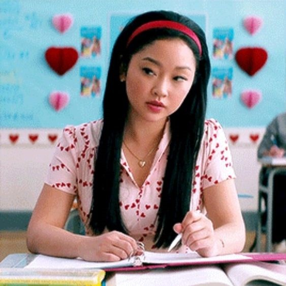
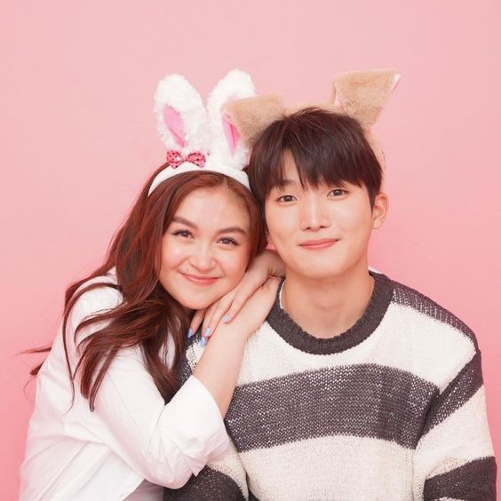
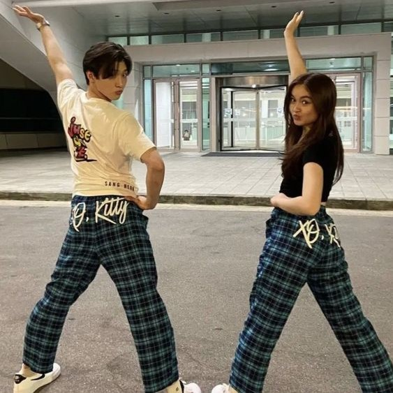

Me and My Friends' favorite season!
The most underrated fun series!
| Exposure | People | Information |
|---|---|---|
| Katherine Song Covey | The Matchmaker in all the parts of the story, the best character and who definitely deserves the best. Except for the fact she sent all her love letters to keep to herself to all her past crushes, but thanks to that, Ms. Lara Jean found her forever. Kathie, Kitty to her friends. | |
|  | Lara Jean Song Covey | The imagination, which basically she imagines about every boy, that she likes. She dreams about them talking and having good times, but in real life she is scared of. Doing it in imainations make her feel okay but in real commitment, she can't really handle it. Thanks to kitty, she found her forever!! |
|  | Kitty and Dae | A virtual relationship. I can just say they met in Kitty's Seoul trip with her family, the Coveys. And then after that time, they exchanged contacts and have been just calling and messaging for 4 years. And they finally met at the University. |
|  | Kitty and Min ho | This is the best frenemie I will accept. Their chemistry having Kitty helping him out with a popular kpop star, and Min ho thanking her. She gets expelled from the university because of staying in the boys dorm, and then Min ho thought she could use a hand so he went with her, also for Min ho to visit his Mother. |